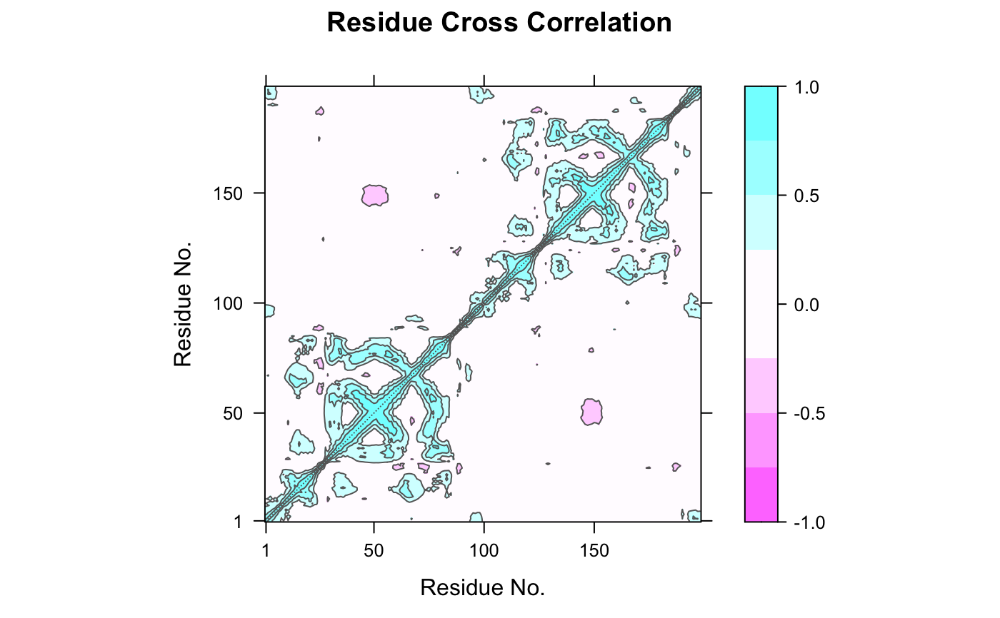
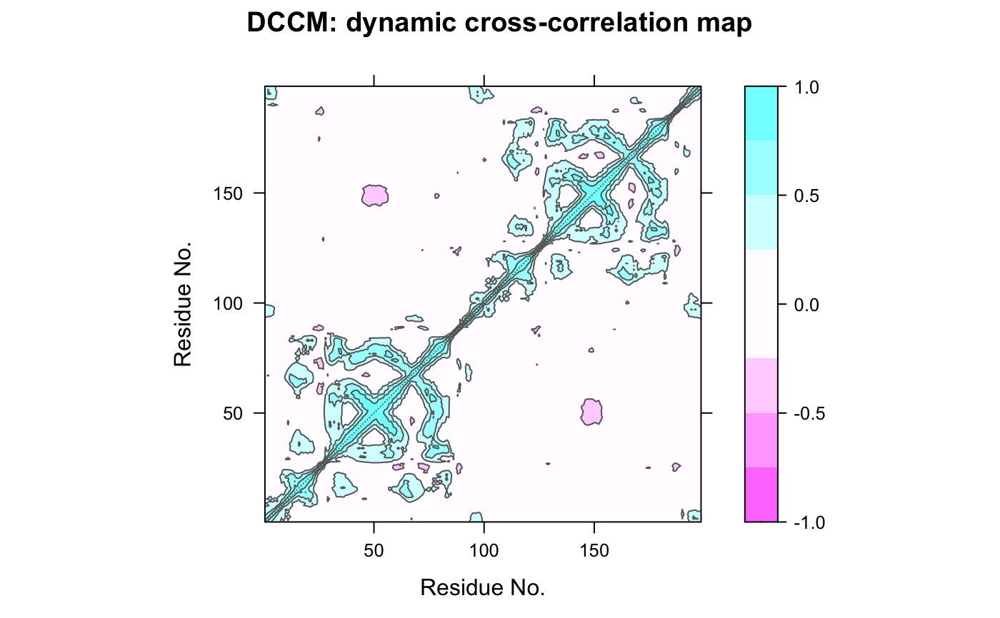
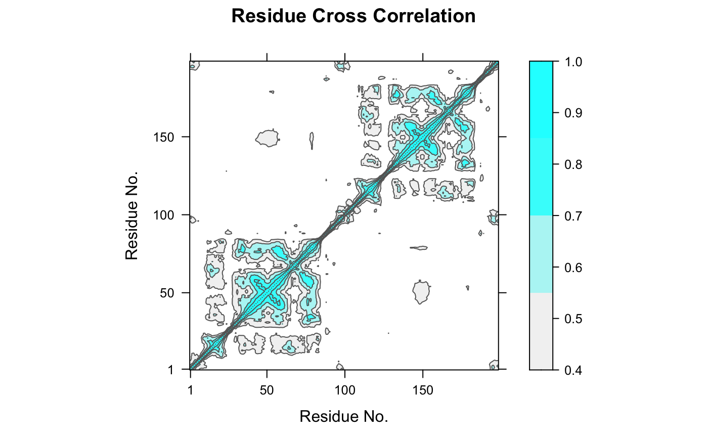

dccm.xyz.RdDetermine the cross-correlations of atomic displacements.
# S3 method for xyz dccm(x, reference = NULL, grpby=NULL, method=c("pearson", "lmi"), ncore=1, nseg.scale=1, ...)
| x | a numeric matrix of Cartesian coordinates with a row per structure/frame. |
|---|---|
| reference | The reference structure about which displacements are analysed. |
| grpby | a vector counting connective duplicated elements that
indicate the elements of |
| method | method to calculate the cross-correlation. Currently supports Pearson and linear mutual information (LMI). |
| ncore | number of CPU cores used to do the calculation.
|
| nseg.scale | split input data into specified number of segments
prior to running multiple core calculation. See |
| ... | Additional arguments to be passed (currently ignored). |
The extent to which the atomic fluctuations/displacements of a system are correlated with one another can be assessed by examining the magnitude of all pairwise cross-correlation coefficients (see McCammon and Harvey, 1986).
This function returns a matrix of all atom-wise cross-correlations whose elements, Cij, may be displayed in a graphical representation frequently termed a dynamical cross-correlation map, or DCCM.
If Cij = 1 the fluctuations of atoms i and j are completely correlated (same period and same phase), if Cij = -1 the fluctuations of atoms i and j are completely anticorrelated (same period and opposite phase), and if Cij = 0 the fluctuations of i and j are not correlated.
Typical characteristics of DCCMs include a line of strong cross-correlation along the diagonal, cross-correlations emanating from the diagonal, and off-diagonal cross-correlations. The high diagonal values occur where i = j, where Cij is always equal to 1.00. Positive correlations emanating from the diagonal indicate correlations between contiguous residues, typically within a secondary structure element or other tightly packed unit of structure. Typical secondary structure patterns include a triangular pattern for helices and a plume for strands. Off-diagonal positive and negative correlations may indicate potentially interesting correlations between domains of non-contiguous residues.
If method = "pearson", the conventional Pearson's inner-product
correlaiton calculation will be invoked, in which only the diagnol of
each atom-atom variance-covariance sub-matrix is considered.
If method = "lmi", then the linear mutual information
cross-correlation will be calculated. ‘LMI’ considers both
diagnol and off-diagnol entries in the sub-matrices, and so even captures
the correlation of atoms moving in orthognal directions.
Returns a cross-correlation matrix with values in a range from -1 to 1 (Pearson) or from 0 to 1 (LMI).
Grant, B.J. et al. (2006) Bioinformatics 22, 2695--2696.
McCammon, A. J. and Harvey, S. C. (1986) Dynamics of Proteins and Nucleic Acids, Cambridge University Press, Cambridge.
Lange, O.F. and Grubmuller, H. (2006) PROTEINS: Structure, Function, and Bioinformatics 62:1053--1061.
Xin-Qiu Yao, Hongyang Li, Gisle Saelensminde, and Barry Grant
cor for examining xyz cross-correlations,
dccm, dccm.nma,
dccm.pca, dccm.enma.
# \donttest{ ##-- Read example trajectory file trtfile <- system.file("examples/hivp.dcd", package="bio3d") trj <- read.dcd(trtfile)#> NATOM = 198 #> NFRAME= 117 #> ISTART= 0 #> last = 117 #> nstep = 117 #> nfile = 117 #> NSAVE = 1 #> NDEGF = 0 #> version 24 #> Reading (x100) | | | 0% | |= | 1% | |= | 2% | |== | 3% | |=== | 4% | |==== | 5% | |==== | 6% | |===== | 7% | |===== | 8% | |====== | 9% | |======= | 9% | |======= | 10% | |======== | 11% | |======== | 12% | |========= | 13% | |========== | 14% | |========== | 15% | |=========== | 16% | |============ | 17% | |============= | 18% | |============= | 19% | |============== | 20% | |============== | 21% | |=============== | 22% | |================ | 22% | |================ | 23% | |================= | 24% | |================== | 25% | |================== | 26% | |=================== | 27% | |=================== | 28% | |==================== | 28% | |===================== | 29% | |===================== | 30% | |====================== | 31% | |====================== | 32% | |======================= | 33% | |======================== | 34% | |========================= | 35% | |========================= | 36% | |========================== | 37% | |=========================== | 38% | |=========================== | 39% | |============================ | 40% | |============================ | 41% | |============================= | 41% | |============================== | 42% | |============================== | 43% | |=============================== | 44% | |=============================== | 45% | |================================ | 46% | |================================= | 47% | |================================== | 48% | |================================== | 49% | |=================================== | 50% | |==================================== | 51% | |==================================== | 52% | |===================================== | 53% | |====================================== | 54% | |======================================= | 55% | |======================================= | 56% | |======================================== | 57% | |======================================== | 58% | |========================================= | 59% | |========================================== | 59% | |========================================== | 60% | |=========================================== | 61% | |=========================================== | 62% | |============================================ | 63% | |============================================= | 64% | |============================================= | 65% | |============================================== | 66% | |=============================================== | 67% | |================================================ | 68% | |================================================ | 69% | |================================================= | 70% | |================================================= | 71% | |================================================== | 72% | |=================================================== | 72% | |=================================================== | 73% | |==================================================== | 74% | |==================================================== | 75% | |===================================================== | 76% | |====================================================== | 77% | |====================================================== | 78% | |======================================================= | 78% | |======================================================== | 79% | |======================================================== | 80% | |========================================================= | 81% | |========================================================= | 82% | |========================================================== | 83% | |=========================================================== | 84% | |============================================================ | 85% | |============================================================ | 86% | |============================================================= | 87% | |============================================================== | 88% | |============================================================== | 89% | |=============================================================== | 90% | |=============================================================== | 91% | |================================================================ | 91% | |================================================================= | 92% | |================================================================= | 93% | |================================================================== | 94% | |================================================================== | 95% | |=================================================================== | 96% | |==================================================================== | 97% | |===================================================================== | 98% | |===================================================================== | 99% | |======================================================================| 100%## Read the starting PDB file to determine atom correspondence pdbfile <- system.file("examples/hivp.pdb", package="bio3d") pdb <- read.pdb(pdbfile) ## select residues 24 to 27 and 85 to 90 in both chains inds <- atom.select(pdb, resno=c(24:27,85:90), elety='CA') ## lsq fit of trj on pdb xyz <- fit.xyz(pdb$xyz, trj, fixed.inds=inds$xyz, mobile.inds=inds$xyz) ## DCCM (slow to run so restrict to Calpha) cij <- dccm(xyz) ## Plot DCCM plot(cij)#> Warning: package ‘lattice’ was built under R version 3.6.2contourplot(cij, region = TRUE, labels=FALSE, col="gray40", at=c(-1, -0.75, -0.5, -0.25, 0.25, 0.5, 0.75, 1), xlab="Residue No.", ylab="Residue No.", main="DCCM: dynamic cross-correlation map")## LMI matrix cij <- dccm(xyz, method='lmi') ## Plot LMI matrix #plot(cij) col.scale <- colorRampPalette(c("gray95", "cyan"))(5) plot(cij, at=seq(0.4,1, length=5), col.regions=col.scale)# }